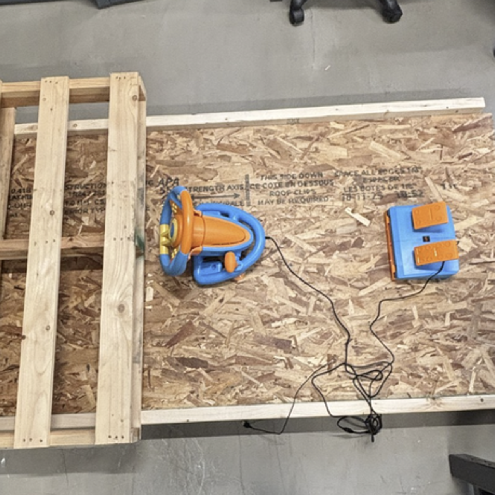
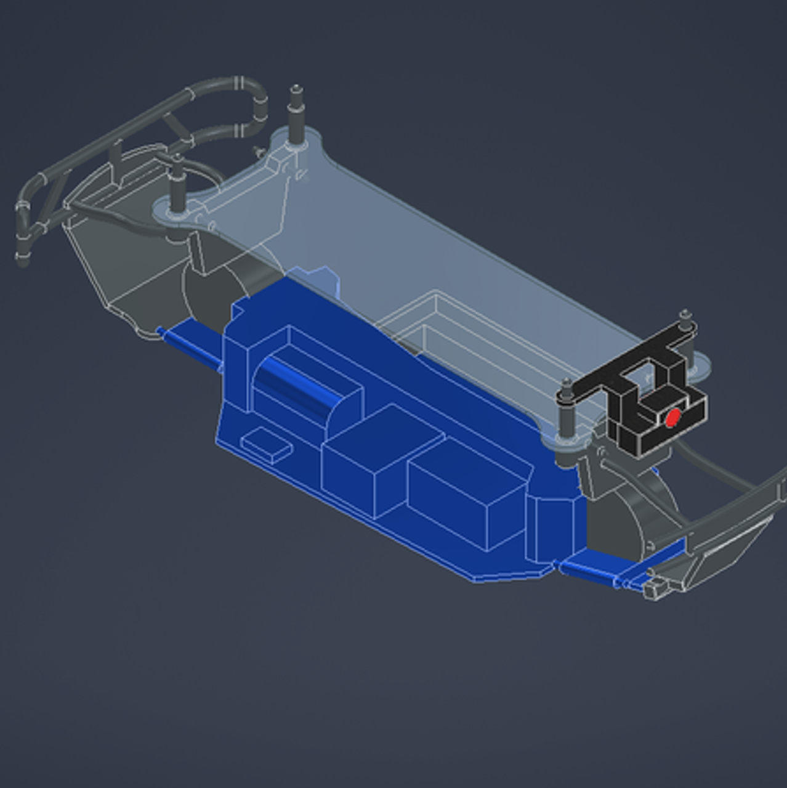
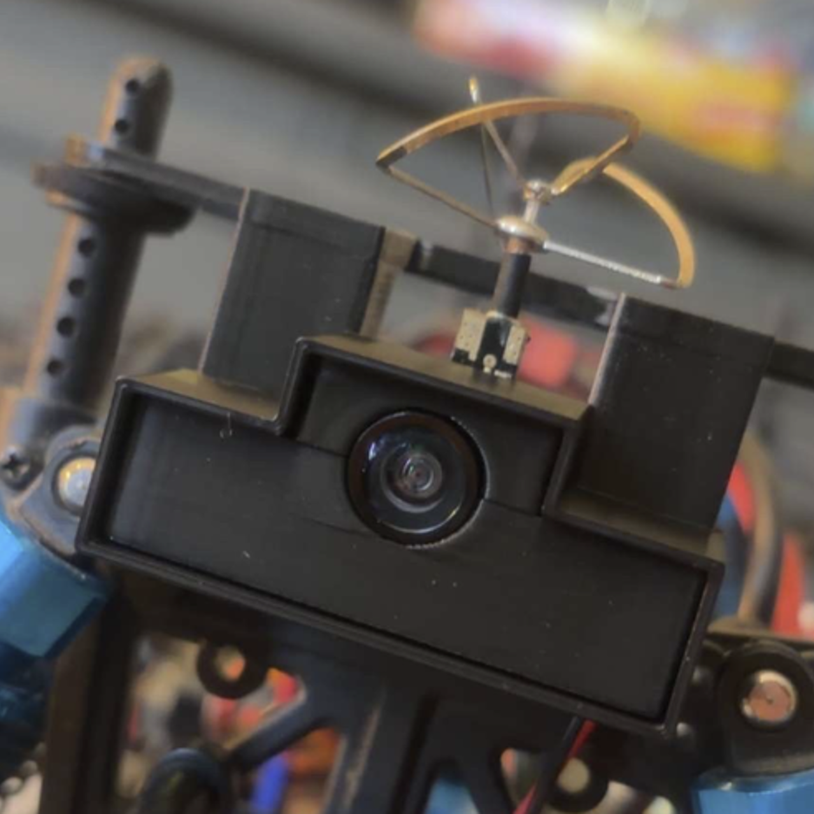
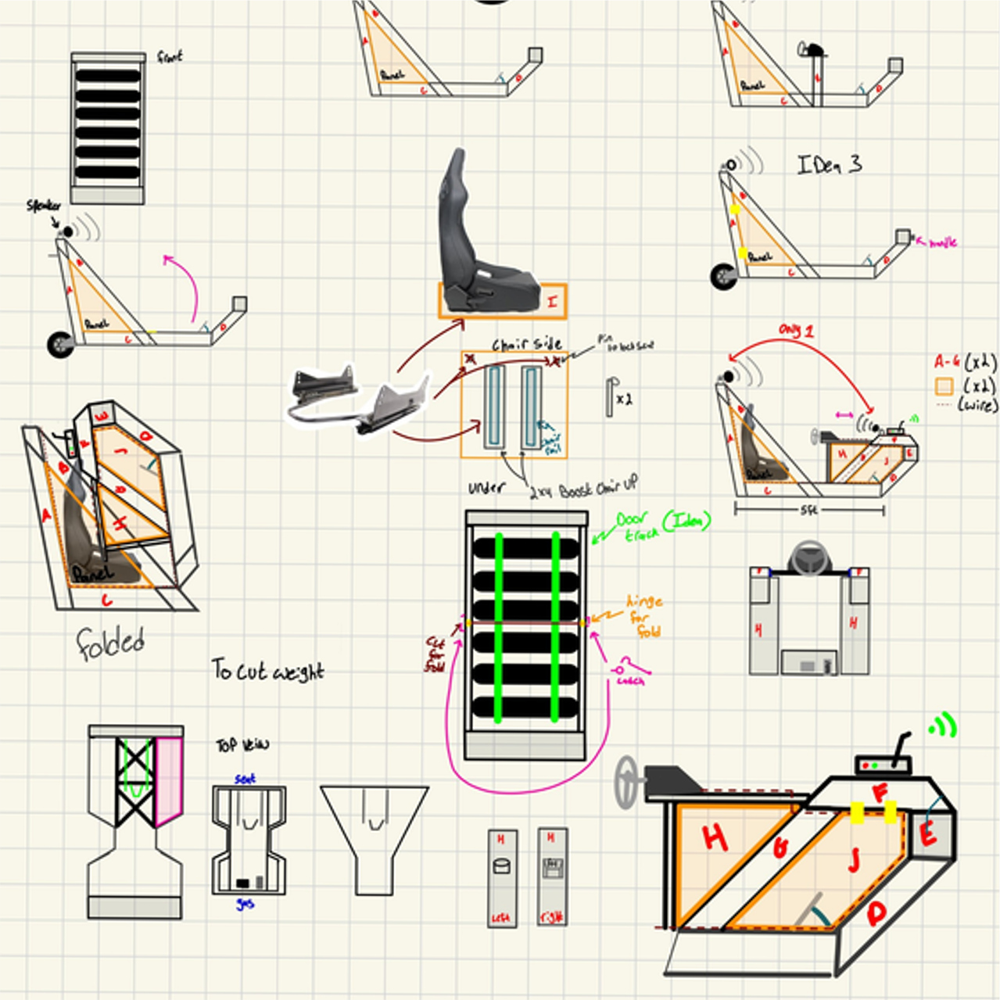

Project Full Send
Project Full Send is a robotics capstone focused on building a real-world RC racing simulator system. The project integrates a physical RC vehicle, custom control inputs, and a live FPV camera feed to create an immersive driving experience.
The system replaces a traditional handheld controller with a steering wheel and pedal setup, while streaming real-time video from the vehicle to the driver.
Key Systems
- RC vehicle platform (Volcano EPX)
- FPV camera system
- Custom steering + pedal controls
- Arduino-based signal mapping
- Future GPS and telemetry integration
Project Gallery




Demonstration
My Contributions
- GPS module research and integration planning
- Early Python/Pygame interface development
- Simulator frame construction support
- Electronics sourcing (microcontroller + FPV receiver)
- System architecture planning
Project Summary
This project demonstrates the integration of mechanical systems, embedded electronics, and real-time video transmission into a single working robotics platform. It highlights system-level thinking, iterative development, and practical engineering problem solving.